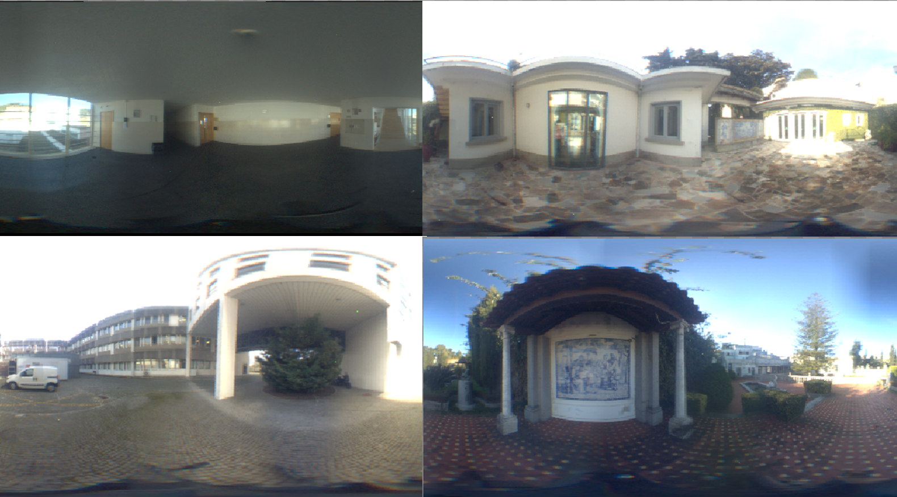
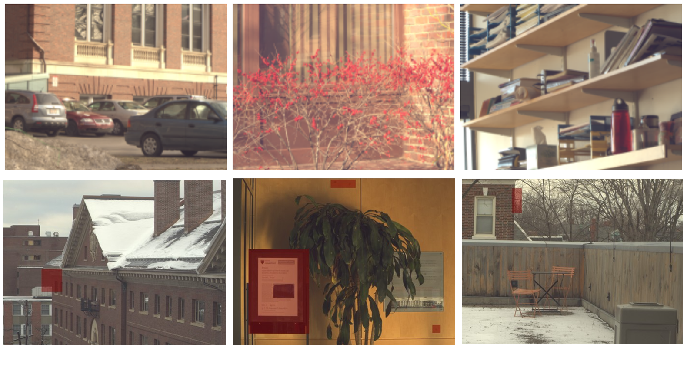
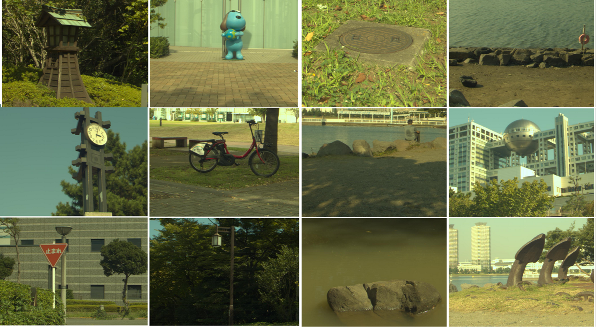

Hyperspectral Captures
This page contains all the hyperspectral capture data I've collected during my research.
If you decide to use them for your work, do not forget to include the respective citations.
To cite the datasets as provided by me, please also include the following citation: lt_hyperspectral_datasets.bib.
In case you know of a dataset that could extend this list, or in case you find an error in the data,
please contact me.
Data Organization
Every dataset contains multiple files, each corresponding to a single image. The structure of each file is as follows:
-
The first line contains
image height(number of pixels) -
The second line contains
image width(number of pixels) -
Each following line contains comma-separated spectral samples of a single pixel, sampled starting at
380nmwith10nmincrements.
To read and manipulate the data, feel free to use my Python script.
In addition to loading the data, it also provides a conversion into RGB and their further export into an .exr file.
Note that, in my research, I used the individual measurements to simulate illumination. This raised multiple issues with scaling of the SPDs.
Therefore, some of the data may be scaled to match rendering conditions, or simply for visualization purposes.
This does not, in any way, affect the shape of the spectra.
Data Downsampling
Unfortunately, some of the original datasets had an extremely detailed resolution and were too large to use for testing purposes during my research (and also to upload).
Therefore, I created their "downscaled" versions (= that only store every Nth pixel), which are the versions that I provide here.
For the original data, feel free to contact me - however, note that the size is in gigabytes.
Datasets

Morimoto Dataset
Outdoor
High-precision environment map captures, little variability.
While some of the captures were performed indoors, the source of illumination is always solely outdoor lighting.
Total count: 10

HyperSpectral Dataset
Indoor & Outdoor
A collection of high-variety captures by Chakrabarti and Zickler.
The majority of them are closeups & unsuitable for image-based lighting.
Indoor captures do not have light source information - there is a possibility that the illumination is still coming "through a window".
Total count: 26 Indoor & 50 Outdoor

HS-SOD Dataset
Outdoor
Closeup captures of varying objects in outdoor environments.
Not suitable for image-based lighting due to distinct nature of the project.
High variability in the subjects, but beware of the warm tint (CCT estimation issues).
Total count: 60